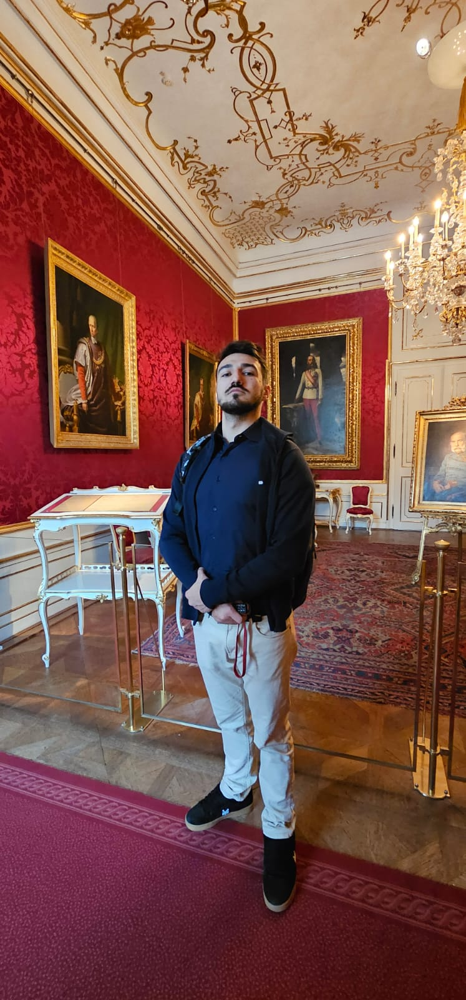

Defta Andrei Robert
Bucuresti| Email ddeftaandrei@gmail.com
LinkedIn : https://www.linkedin.com/in/andrei-defta-6122501a0/
Rol: Future Developer Full-Stack

About Me
I am a student at UTCB, specializing in Automation and Applied Computer Science, passionate about programming and technology.
I enjoy learning new things and working on projects.
I like to learn, find solutions, and challenge myself with new problems.
I am motivated to improve my skills and contribute to interesting projects.
Technical Skills
- Python
-
I have experience in developing applications using Python, covering the following areas:
- Databases: SQLAlchemy, SQLite, PostgreSQL
- Data Visualization: Matplotlib, Seaborn, Plotly
- Machine Learning: Scikit-learn, TensorFlow (beginner), Pandas, NumPy
- Graphical Interfaces: PyQt5, Tkinter
- Automation: Selenium, BeautifulSoup
I have theoretical and practical knowledge in using these libraries, but I wish to deepen my understanding of Machine Learning, including more complex models (using TensorFlow and PyTorch). I am also interested in applying this knowledge in web projects.
🎓 Education
UTCB Hydrotechnics - Automation and Applied Computer Science
Bachelor's Degree in Computer Science
2020–2024
Machine Learning

Software Development Engineer